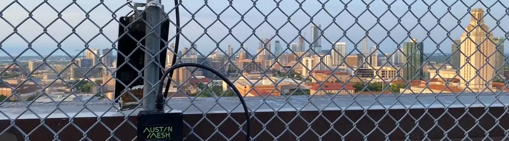
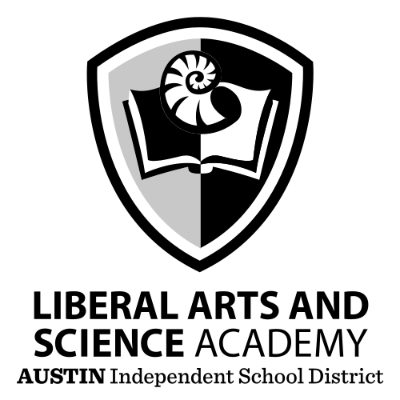
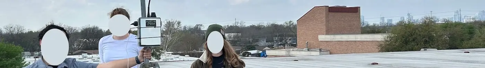

Our community partners
Want to support Austin Mesh and the Austin Community at large? Reach out to us via email at info@austinmesh.org!
University of Texas at Austin
The node at UT Austin is located on top of the Physics, Math, and Astronomy building on the South face at ~80m above ground. It provides coverage for a significant portion of West, South, and East Austin through it's 10dBi antenna and RAK19007 circuit board. The node uses a Voltaic Systems V50 battery connected to a 20w solar panel making this node entirely self supporting.
View all photos from the UT Austin node site
 The Liberal Arts and Science Academy (LASA)
The node at LASA is hosted on their rooftop and graciously supported by LASA Amateur Radio Club. While the antenna and position change slightly from time to time for experiments, this node uses a RAK19007 baseboard with an 8w solar panel connected to a Voltaic Systems V50 battery. It provides coverage for a significant portion of East, South East, and even some areas of South West Austin.
